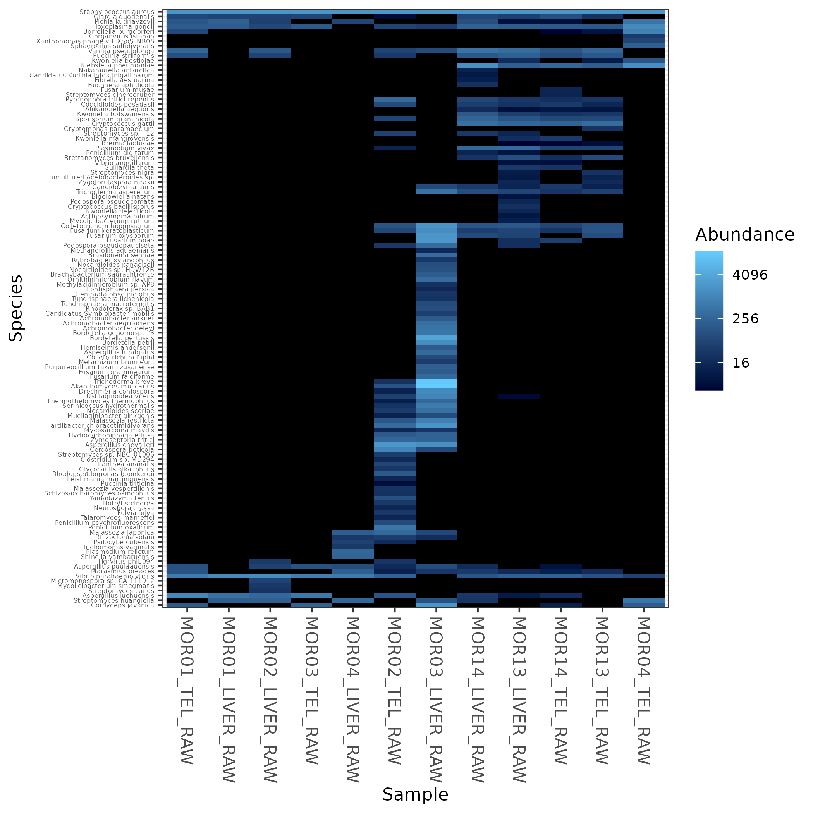
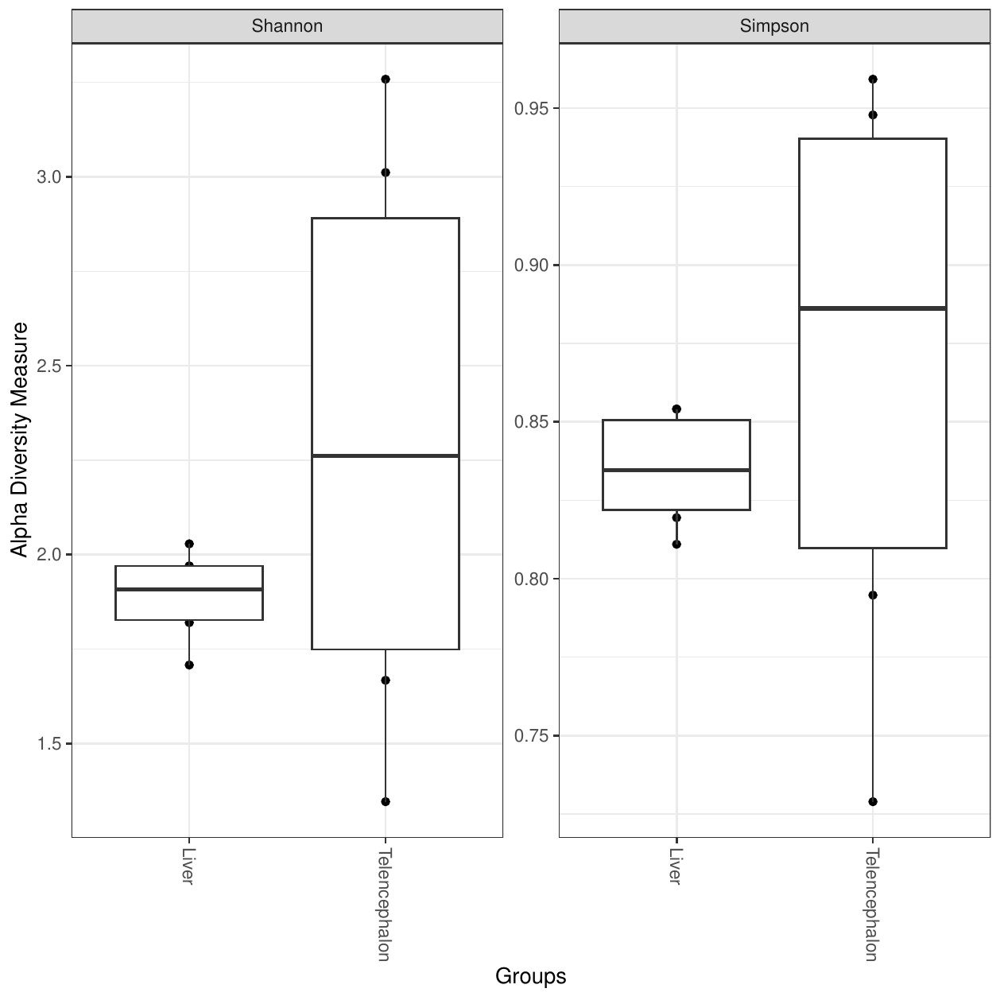
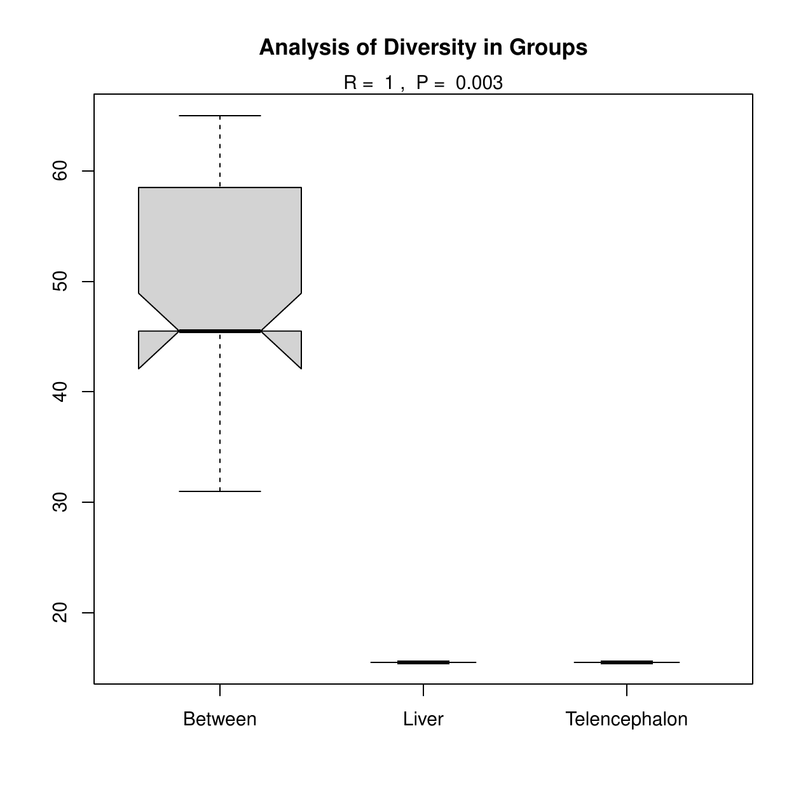
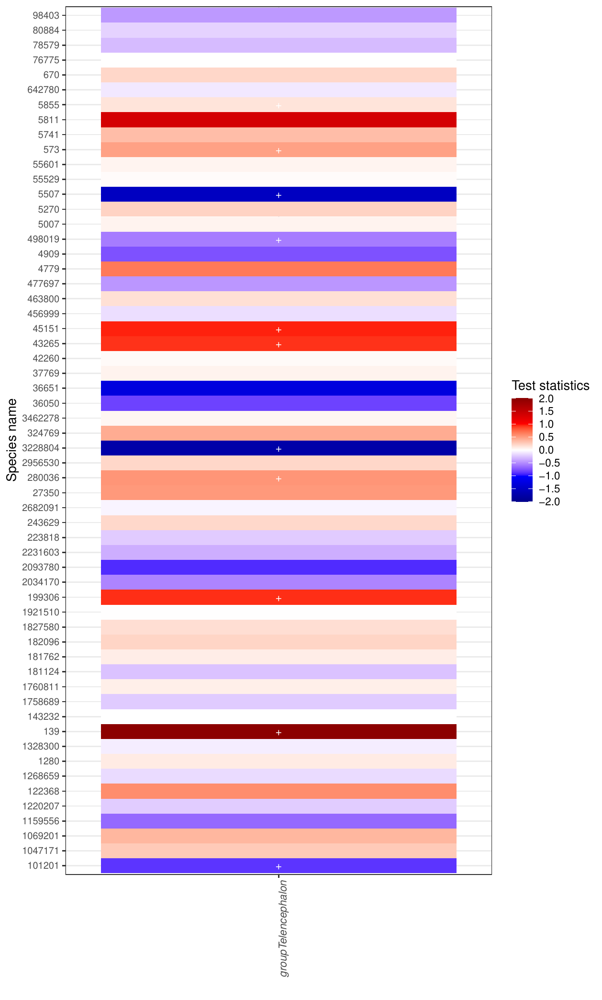
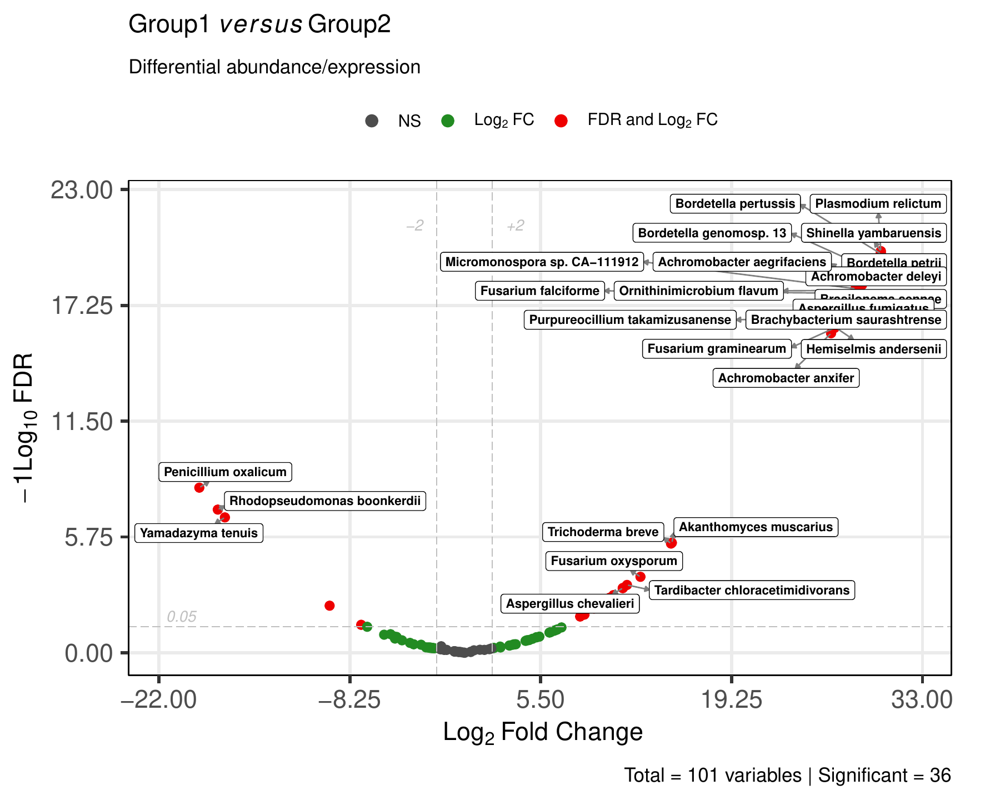

Microbiome comparison outputs¶
This page describes the microbiome comparison outputs generated by MTD Explorer.
These outputs are produced when comparison groups are available and microbiome abundance profiles can be compared between conditions.
The main microbiome comparison folder is:
Despite the historical folder name, this directory stores microbiome and non-host comparison outputs, including Bracken abundance matrices, diversity plots, differential-abundance results, and statistical summaries.
Main output files¶
A typical Nonhost_DEG/ folder may contain:
Nonhost_DEG/bracken_species_all_DEG.csv
Nonhost_DEG/bracken_species_all_normalized.csv
Nonhost_DEG/bracken_species_all_normalized_transformed.csv
Nonhost_DEG/braycurtis.csv
Nonhost_DEG/braycurtis-pcoa.csv
Nonhost_DEG/Heatmap_all.png
Nonhost_DEG/Alpha_diversity.pdf
Nonhost_DEG/ANOSIM.pdf
Nonhost_DEG/ANOSIM-analysis-output.txt
Pairwise comparison outputs are usually stored in folders such as:
Microbiome abundance heatmap¶
The global microbiome heatmap is usually stored as:

This heatmap summarizes microbiome abundance patterns across samples and taxa.
It helps users inspect whether samples cluster by experimental group and whether a small number of taxa dominate the comparison.
Use this figure together with the normalized Bracken matrices and sample metadata.
Alpha diversity comparison¶
The main alpha diversity figure is usually:

Alpha diversity summarizes within-sample microbiome diversity.
This output helps compare whether groups differ in their overall microbiome diversity.
Additional alpha diversity files may also be present:
Nonhost_DEG/Alpha_diversity_sample.pdf
Nonhost_DEG/Alpha_diversity_Shannon.pdf
Nonhost_DEG/Alpha_diversity_Simpson.pdf
Nonhost_DEG/alpha-diversity.csv
Use the CSV file when you need the underlying values for reporting or further statistical inspection.
Beta diversity and ANOSIM¶
The ANOSIM output is usually stored as:

ANOSIM evaluates whether microbiome community composition differs between groups based on a distance matrix.
Related files may include:
The braycurtis.csv file stores the Bray-Curtis distance matrix.
The braycurtis-pcoa.csv file stores coordinates used for ordination-based
inspection.
ANOSIM should be interpreted as a community-level test, not as evidence that a specific taxon is differentially abundant.
Differential abundance with ANCOM-BC¶
ANCOM-BC results are usually stored in:
The version with species names is usually easier to inspect:
The main heatmap is usually:

Common ANCOM-BC result tables include:
Nonhost_DEG/ANCOMBC_results/with_species_names/diff_abundance_name.csv
Nonhost_DEG/ANCOMBC_results/with_species_names/p_value_name.csv
Nonhost_DEG/ANCOMBC_results/with_species_names/q_value_name.csv
Nonhost_DEG/ANCOMBC_results/with_species_names/Test_statistics_name.csv
Nonhost_DEG/ANCOMBC_results/with_species_names/Global_test_name.csv
Use the CSV files for interpretation and reporting.
The heatmap is a compact visualization, but the tables are the source of the statistical results.
Microbiome volcano plot¶
MTD Explorer may generate a microbiome volcano plot from the comparison-specific Bracken differential-abundance table.
The preferred output is usually generated from a file matching:

The volcano plot summarizes effect size and statistical support for comparison-level microbiome features.
Genes are not shown here; this plot refers to microbiome taxa or features from the Bracken abundance table.
Some runs may also contain a standard volcano plot, such as:
Use the comparison-specific CSV file for the underlying results:
Additional microbiome comparison outputs¶
Other microbiome comparison figures may also be generated:
Nonhost_DEG/Bar_phy.pdf
Nonhost_DEG/Bar_group_phy.pdf
Nonhost_DEG/Bar_relative_phy.pdf
Nonhost_DEG/non-host_vs_host_reads_ratio.pdf
Nonhost_DEG/unclassified_reads_ratio.pdf
These outputs can be useful for detailed inspection, but they may be visually dense.
Presence/absence overlap visualizations are documented in the Taxonomic exploratory outputs page, where the Venn and Euler diagrams provide a clearer exploratory overview.
For documentation purposes, this page shows a smaller set of representative comparison figures.
MaAsLin2 outputs¶
Some runs may also contain MaAsLin2 outputs, usually under:
Typical files may include:
Nonhost_DEG/MaAsLin2_results/ref_Telencephalon/all_results.tsv
Nonhost_DEG/MaAsLin2_results/ref_Telencephalon/significant_results.tsv
Nonhost_DEG/MaAsLin2_results/ref_Telencephalon/maaslin2.log
Use these files when interpreting multivariable microbiome associations.
Recommended inspection order¶
For microbiome comparisons, inspect files in this order:
Nonhost_DEG/bracken_species_all_normalized.csv
Nonhost_DEG/Heatmap_all.png
Nonhost_DEG/Alpha_diversity.pdf
Nonhost_DEG/ANOSIM-analysis-output.txt
Nonhost_DEG/ANCOMBC_results/with_species_names/diff_abundance_name.csv
Nonhost_DEG/ANCOMBC_results/with_species_names/q_value_name.csv
Nonhost_DEG/Liver_vs_Telencephalon/bracken_species_all_Liver_vs_Telencephalon.csv
methods/mtd_methods_run_parameters.csv
The methods/mtd_methods_run_parameters.csv file records the database paths,
taxonomic settings, Kraken2 parameters, Bracken
parameters, and software versions.
What these outputs can support¶
Microbiome comparison outputs can help answer whether microbiome profiles cluster by group, whether groups differ in alpha diversity, whether overall community composition differs, and which taxa are differentially abundant.
What not to conclude¶
Do not interpret a visual cluster as proof of group separation by itself.
Do not interpret a Venn diagram as differential abundance.
Do not interpret a volcano plot without checking the corresponding result table.
Do not interpret a taxon as biologically important only because it is visually prominent.
Do not compare microbiome results across runs unless the database, taxonomic rank, filtering, normalization, and statistical settings are comparable.
When outputs may be missing¶
Microbiome comparison outputs may be missing or incomplete when:
- no non-host taxa were detected;
- the Bracken abundance table is missing;
- too few samples are available;
- the samplesheet does not contain valid comparison groups;
- the matrix is too sparse;
- ANCOM-BC or MaAsLin2 failed;
- the volcano step failed but the pipeline continued;
- a plotting step failed after the main tables were generated.